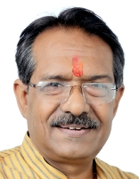

तीसरा नरेंद्र मोदी मंत्रालय

अवधि:
९ जून २०२४ - १ जनवरी २०२५
उप प्रधान मंत्री:
संघटन:
कैबिनेट मंत्री: ३०
राज्य मंत्री (स्वतंत्र प्रभार): ५
राज्य मंत्री: ३६
प्रमुख कैबिनेट मंत्री
राजनाथ सिंह
रक्षा मंत्रालय
अमित शाह
गृह मंत्रालय
नितिन गडकरी
सड़क परिवहन और राजमार्ग मंत्रालय
जगत प्रकाश नड्डा
स्वास्थ्य और परिवार कल्याण मंत्रालय
सभी मंत्री
नरेंद्र मोदी
परमाणु ऊर्जा विभाग[प्रधान मंत्री]अंतरिक्ष विभाग[प्रधान मंत्री]
कार्मिक, लोक शिकायत और पेंशन मंत्रालय[प्रधान मंत्री]

राजनाथ सिंह
रक्षा मंत्रालय[कैबिनेट मंत्री]
अमित शाह
सहकारिता मंत्रालय[कैबिनेट मंत्री]गृह मंत्रालय[कैबिनेट मंत्री]

नितिन गडकरी
सड़क परिवहन और राजमार्ग मंत्रालय[कैबिनेट मंत्री].jpg)
जगत प्रकाश नड्डा
रसायन और उर्वरक मंत्रालय[कैबिनेट मंत्री]स्वास्थ्य और परिवार कल्याण मंत्रालय[कैबिनेट मंत्री]

शिवराज सिंह चौहान
कृषि मंत्रालय[कैबिनेट मंत्री]ग्रामीण विकास मंत्रालय[कैबिनेट मंत्री]
_(cropped).jpg)
निर्मला सीतारमन
कारपोरेट कार्य मंत्रालय[कैबिनेट मंत्री]वित्त मत्रांलय[कैबिनेट मंत्री]

सुब्रह्मण्यम जयशंकर
विदेश मंत्रालय[कैबिनेट मंत्री]
मनोहर लाल खटटर
आवास और शहरी गरीबी उपशमन मंत्रालय[कैबिनेट मंत्री]बिजली मंत्रालय[कैबिनेट मंत्री]

एच. डी.
भारी उद्योग मंत्रालय[कैबिनेट मंत्री]इस्पात मंत्रालय[कैबिनेट मंत्री]
.jpg)
पीयूष गोयल
वाणिज्य और उद्योग मंत्रालय[कैबिनेट मंत्री]
धर्मेंद्र प्रधान
शिक्षा मंत्रालय[कैबिनेट मंत्री]
जीतन राम मांझी
सूक्ष्म, लघु और मझौले उद्यम मंत्रालय[कैबिनेट मंत्री]
राजीव रंजन सिंह
मत्स्य पालन, पशुपालन और डेयरी मंत्रालय[कैबिनेट मंत्री]पंचायती राज मंत्रालय[कैबिनेट मंत्री]

सर्बानंद सोनोवाल
जहाजरानी मंत्रालय[कैबिनेट मंत्री]
वीरेंद्र कुमार खटीकी
सामाजिक न्याय और अधिकारिता मंत्रालय[कैबिनेट मंत्री]
राममोहन नायडू किंजरपु
नागरिक उड्डयन मंत्रालय[कैबिनेट मंत्री]
प्रल्हाद जोशी
उपभोक्ता मामले, खाद्य और सार्वजनिक वितरण मंत्रालय[कैबिनेट मंत्री]नवीन और नवीकरणीय ऊर्जा मंत्रालय[कैबिनेट मंत्री]

जुआल ओरामी
जनजातीय मामलों के मंत्रालय[कैबिनेट मंत्री]
गिरिराज सिंह
कपड़ा मंत्रालय[कैबिनेट मंत्री]
अश्विनी वैष्णव
सूचना प्रौद्योगिकी मंत्रालय[कैबिनेट मंत्री]रेल मंत्रालय[कैबिनेट मंत्री]

ज्योतिरादित्य सिंधिया
संचार मंत्रालय[कैबिनेट मंत्री]पूर्वोत्तर क्षेत्र के विकास मंत्रालय[कैबिनेट मंत्री]

भूपेंद्र यादव
पर्यावरण और वन मंत्रालय[कैबिनेट मंत्री]
गजेन्द्रसिंह शेखावाटी
संस्कृति मंत्रालय[कैबिनेट मंत्री]पर्यटन मंत्रालय[कैबिनेट मंत्री]

अन्नपूर्णा देवी यादव
महिला एवं बाल विकास मंत्रालय[कैबिनेट मंत्री]
किरेन रिजिजू
अल्पसंख्यक मामलों के मंत्रालय[कैबिनेट मंत्री]संसदीय कार्य मंत्रालय[कैबिनेट मंत्री]
_(cropped).jpg)
हरदीप सिंह पुरी
पेट्रोलियम और प्राकृतिक गैस मंत्रालय[कैबिनेट मंत्री]’,_in_New_Delhi.JPG)
एल. मनसुख मंडाविया
श्रम मंत्रालय[कैबिनेट मंत्री]युवा मामले और खेल मंत्रालय[कैबिनेट मंत्री]

जी. किशन रेड्डी
कोयला मंत्रालय[कैबिनेट मंत्री]खान मंत्रालय[कैबिनेट मंत्री]

चिराग पासवान
खाद्य प्रसंस्करण उद्योग मंत्रालय[कैबिनेट मंत्री]
चंद्रकांत रघुनाथ पाटिल
जल शक्ति मंत्रालय[कैबिनेट मंत्री]
राव इंद्रजीत सिंह
संस्कृति मंत्रालय[राज्य मंत्री]योजना मंत्रालय[राज्य मंत्री (स्वतंत्र प्रभार)]
सांख्यिकी और कार्यक्रम कार्यान्वयन मंत्रालय[राज्य मंत्री (स्वतंत्र प्रभार)]

जितेंद्र सिंह
परमाणु ऊर्जा विभाग[राज्य मंत्री]अंतरिक्ष विभाग[राज्य मंत्री]
पृथ्वी विज्ञान मंत्रालय[राज्य मंत्री (स्वतंत्र प्रभार)]

अर्जुन राम मेघवाल
कानून और न्याय मंत्रालय[राज्य मंत्री (स्वतंत्र प्रभार)]संसदीय कार्य मंत्रालय[राज्य मंत्री]

प्रतापराव गणपतराव जाधव
आयुर्वेद योग और प्राकृतिक चिकित्सा मंत्रालय यूनानी सिद्ध और होम्योपैथी[राज्य मंत्री (स्वतंत्र प्रभार)]
जयन्त चौधरी
शिक्षा मंत्रालय[राज्य मंत्री]कौशल विकास और उद्यमिता मंत्रालय[राज्य मंत्री (स्वतंत्र प्रभार)]

जितिन प्रसाद
वाणिज्य और उद्योग मंत्रालय[राज्य मंत्री]सूचना प्रौद्योगिकी मंत्रालय[राज्य मंत्री]

श्रीपाद यासो नायको
नवीन और नवीकरणीय ऊर्जा मंत्रालय[राज्य मंत्री]बिजली मंत्रालय[राज्य मंत्री]

पंकज चौधरी
वित्त मत्रांलय[राज्य मंत्री]
कृष्ण पाल
सहकारिता मंत्रालय[राज्य मंत्री]
आठवले रामदास बंदु
सामाजिक न्याय और अधिकारिता मंत्रालय[राज्य मंत्री]
रामनाथ ठाकुर
कृषि मंत्रालय[राज्य मंत्री]
नित्यानंद राय
गृह मंत्रालय[राज्य मंत्री]
अनुप्रिया पटेल
रसायन और उर्वरक मंत्रालय[राज्य मंत्री]स्वास्थ्य और परिवार कल्याण मंत्रालय[राज्य मंत्री]

वी.
जल शक्ति मंत्रालय[राज्य मंत्री]रेल मंत्रालय[राज्य मंत्री]

पेम्मासानी चंद्र शेखर
संचार मंत्रालय[राज्य मंत्री]ग्रामीण विकास मंत्रालय[राज्य मंत्री]

एस. पी. सिंह बघेल
मत्स्य पालन, पशुपालन और डेयरी मंत्रालय[राज्य मंत्री]पंचायती राज मंत्रालय[राज्य मंत्री]

शोभा करंदलाजे
श्रम मंत्रालय[राज्य मंत्री]सूक्ष्म, लघु और मझौले उद्यम मंत्रालय[राज्य मंत्री]

कीर्ति वर्धन सिंह
पर्यावरण और वन मंत्रालय[राज्य मंत्री]विदेश मंत्रालय[राज्य मंत्री]

बी. एल. वर्मा (उत्तर प्रदेश राजनीतिज्ञ)
उपभोक्ता मामले, खाद्य और सार्वजनिक वितरण मंत्रालय[राज्य मंत्री]
शांतनु ठाकुर
जहाजरानी मंत्रालय[राज्य मंत्री]
सुरेश गोपी
पेट्रोलियम और प्राकृतिक गैस मंत्रालय[राज्य मंत्री]पर्यटन मंत्रालय[राज्य मंत्री]

एल. मुरुगना
सूचना और प्रसारण मंत्रालय[राज्य मंत्री]संसदीय कार्य मंत्रालय[राज्य मंत्री]

अजय टमटा
सड़क परिवहन और राजमार्ग मंत्रालय[राज्य मंत्री]
बंदी संजय कुमार
गृह मंत्रालय[राज्य मंत्री]
-कमलेश पासवान
ग्रामीण विकास मंत्रालय[राज्य मंत्री]
भागीरथ चौधरी
कृषि मंत्रालय[राज्य मंत्री]
-सतीश चंद्र दुबे
कोयला मंत्रालय[राज्य मंत्री]खान मंत्रालय[राज्य मंत्री]

संजय सिंह
रक्षा मंत्रालय[राज्य मंत्री]
रवनीत सिंह
खाद्य प्रसंस्करण उद्योग मंत्रालय[राज्य मंत्री]रेल मंत्रालय[राज्य मंत्री]

दुर्गा दास उइके
जनजातीय मामलों के मंत्रालय[राज्य मंत्री]
रक्षा खडासे
युवा मामले और खेल मंत्रालय[राज्य मंत्री]
सुकांत मजूमदार
पूर्वोत्तर क्षेत्र के विकास मंत्रालय[राज्य मंत्री]शिक्षा मंत्रालय[राज्य मंत्री]

सवित्री ठाकुर
महिला एवं बाल विकास मंत्रालय[राज्य मंत्री]
तोखन साहू
आवास और शहरी गरीबी उपशमन मंत्रालय[राज्य मंत्री]
राज भूषण चौधरी
जल शक्ति मंत्रालय[राज्य मंत्री]
भूपति राजू श्रीनिवास वर्मा
भारी उद्योग मंत्रालय[राज्य मंत्री]इस्पात मंत्रालय[राज्य मंत्री]

हर्ष मल्होत्रा
कारपोरेट कार्य मंत्रालय[राज्य मंत्री]
निमुबेन जयंतीभाई बांभणिया
उपभोक्ता मामले, खाद्य और सार्वजनिक वितरण मंत्रालय[राज्य मंत्री]
मुरलीधर मोहोल
नागरिक उड्डयन मंत्रालय[राज्य मंत्री]सहकारिता मंत्रालय[राज्य मंत्री]

जॉर्ज कुरियन
मत्स्य पालन, पशुपालन और डेयरी मंत्रालय[राज्य मंत्री]अल्पसंख्यक मामलों के मंत्रालय[राज्य मंत्री]

पबित्रा मार्गेरिटा
विदेश मंत्रालय[राज्य मंत्री]कपड़ा मंत्रालय[राज्य मंत्री]